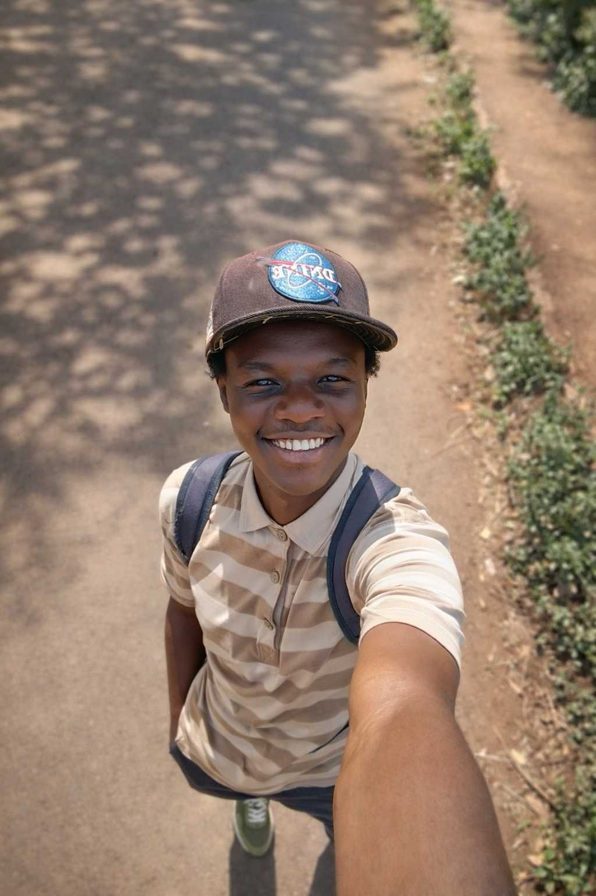

Prince Collins | WDD 130
Hello! My name is Prince Collins and I am from Nairobi,Kenya I enjoy learning new things and expanding my horizons.I am currently a student in the BYU program for software development undertaking Web fundamentals and programming with functions.I look forward to meeting new people of a similar background and mindset.hope I do well.